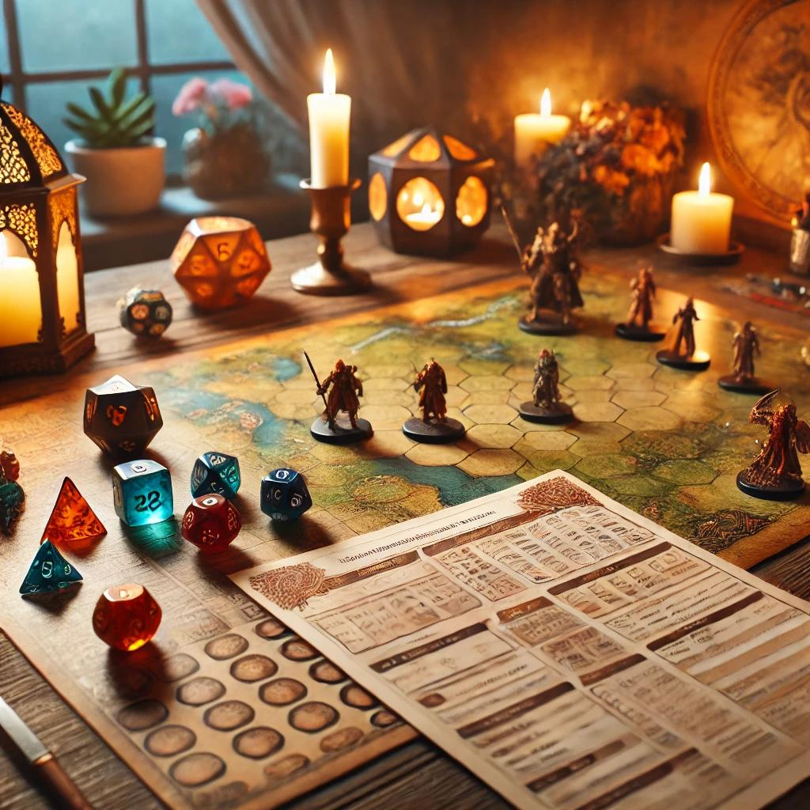
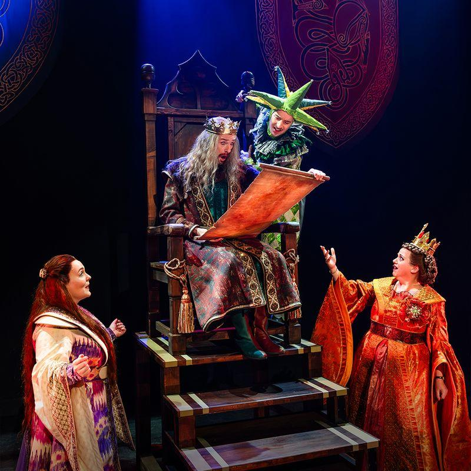
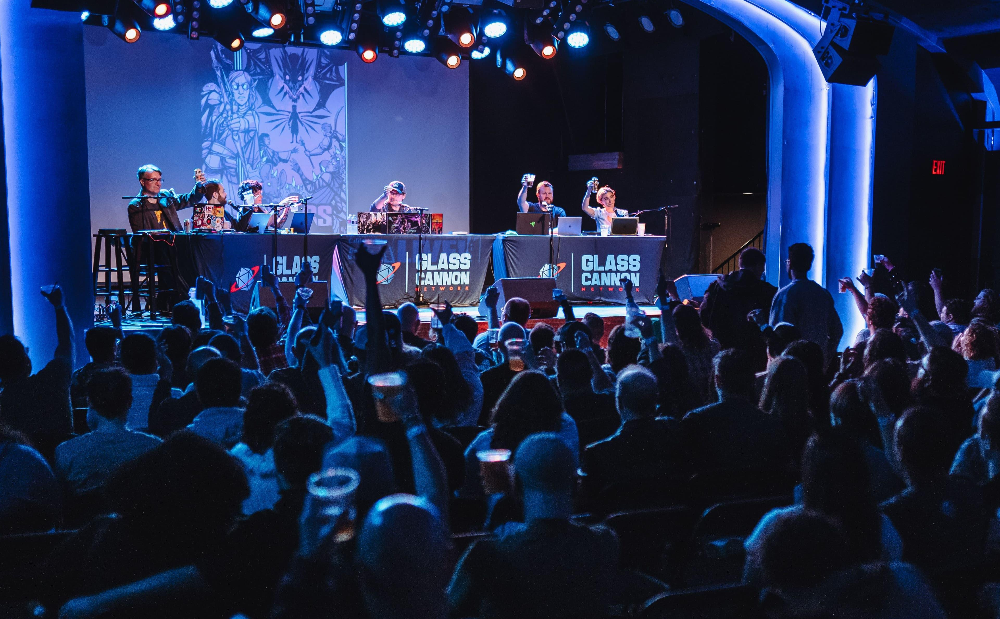

Primeiro Dado
Toda grande aventura começa com um primeiro dado!
O Primeiro Dado é uma iniciativa da Mesa Aberta dedicada a quem deseja conhecer o RPG de mesa. Por meio de encontros introdutórios, participantes aprendem as regras básicas, criam seus primeiros personagens e vivem aventuras acompanhados por narradores voluntários.
Não é necessário ter experiência anterior: basta trazer curiosidade e vontade de compartilhar histórias!
Venha rolar seu primeiro 20 natural!
Quero participar
Histórias em Cena
Quando a imaginação ganha vida no palco!
O Histórias em Cena transforma aventuras de RPG em apresentações teatrais abertas ao público. Por meio da interpretação, da narrativa e da criatividade, buscamos aproximar diferentes pessoas do universo do RPG de mesa de maneira acessível e envolvente.
Cada apresentação é uma oportunidade de conhecer novos mundos, acompanhar personagens inesquecíveis e descobrir o poder das histórias compartilhadas.
Aqui, toda história merece um palco!
Quero participar
Vozes da Mesa
Toda história merece ser ouvida!
O Vozes da Mesa promove encontros e conversas com narradores, criadores de conteúdo, artistas e outros apaixonados pelo RPG de mesa. Nossa proposta é aproximar o público de pessoas que ajudam a construir e divulgar esse universo.
Por meio de palestras, rodas de conversa e atividades interativas, os participantes podem compartilhar experiências, descobrir novas perspectivas e conhecer os bastidores de suas aventuras favoritas.
Porque as melhores histórias são aquelas que compartilhamos!
Quero participar